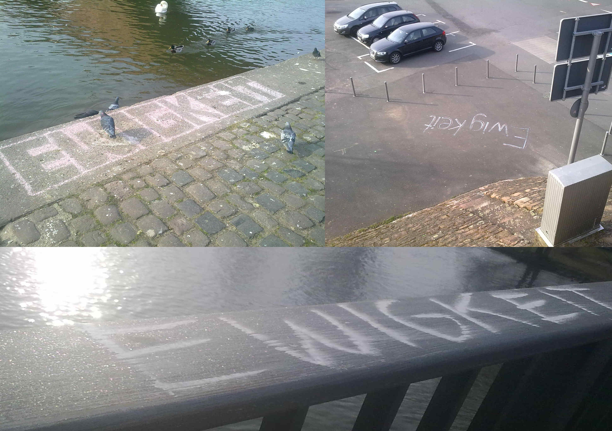

Redaktion kommunal
Auf der Seite von Mapec wurde die neue Ausstellung zum Thema Streetart im Miltenberger Jugendzentrum ausführlich dokumentiert, weshalb wir der Einfachheit halber darauf verweisen.
Redaktion kommunal
Auf der Seite von Mapec wurde die neue Ausstellung zum Thema Streetart im Miltenberger Jugendzentrum ausführlich dokumentiert, weshalb wir der Einfachheit halber darauf verweisen.
Sebastian Schalk
Sebastian Schalk

Man mag es nicht für möglich halten, doch sogar im tristen Miltenberg stolpert man hin und wieder über etwas, das zum Rätseln anregt – und damit sind in diesem Fall nicht die menschlichen Abgründe gemeint. Über die Kreide-Schriftzüge, die vor einigen Tagen aufgetaucht sind, möchte ich deshalb an dieser Stelle keine Spekulationen anstellen.
Redaktion kommunal
Manchmal ist knapp vorbei meilenweit daneben. Und manchmal ist es halt garnicht nur knapp daneben, wenn einer es so unheimlich gut meint – und auch noch dabei filmt:
(mehr…)
zugesandte Terminhinweise
Veranstaltungen gegen TTIP im Kreis Miltenberg und in Aschaffenburg
11.04.2015
15.30 Uhr, Altes Rathaus, Miltenberg, Info-Veranstaltung mit einem Vertreter des Umweltinstituts München – http://www.umweltinstitut.org/home.html
11.04.2015
18.30 Uhr, Schifffahrtsmuseum Wörth, Info-Veranstaltung mit einem Vertreter des Umweltinstituts München – http://www.umweltinstitut.org/home.html
von Kommunale Initiative Aschaffenburg
Am 28. März 1945, wenige Tage vor Kriegsende, wurde in der Herstallstraße Leutnant Friedel Heymann nach einem „Standgerichts-Urteil“ öffentlich gehängt. Er wurde zur Abschreckung ermordet, weil viele nicht mehr kämpfen wollten. Erst nach der Befreiung der Stadt am 3. April vor 70 Jahren wurde sein Leichnam von US-Soldaten abgenommen und zum Friedhof Schweinheim gebracht. Friedel Heymann hatte 3 Tage vorher Anneliese Büttner aus Schweinheim geheiratet und wurde am Abend des 27. März 1945 – obwohl verwundet – aus der Freundstraße abgeholt und am nächsten Tag durch die Nazis ermordet (Beitrag dazu bei kommunal). (mehr…)
Redaktion kommunal
Ein erster Kurzbericht eines Teilnehmenden bei Blockupy aus dem Kreis MIL ist eingegangen. (mehr…)
aus sternab.blogsport.eu
Der nationalsozialistische Völkermord an den Sinti und Roma: Voraussetzungen, Verlauf, Erinnerung
Der Referent zeichnet die wichtigsten Entwicklungslinien des NS-Völkermords an den Sinti und Roma anhand zentraler Dokumente und historischer Fotografien nach: von der gesellschaftlichen Ausgrenzung bis zur staatlich organisierten Vernichtung. Dabei geht er auch auf die Selbstbehauptungsstrategien ein, die die Betroffenen dem übermächtigen Apparat der Verfolger entgegensetzten. Am Ende wird der Frage nachgegangen, warum die Verbrechen an den Sinti und Roma erst so spät Eingang in die Erinnerungskultur fanden. (mehr…)
Bürgerinitiative Stop-TTIP Landkreis Miltenberg
Beim einem Treffen der Bürgerinitiative Stop-TTIP Landkreis Miltenberg ist von den anwesenden 20 Personen Reinhold Spall aus Wörth zum Sprecher gewählt worden. In seiner neuen Funktion und als Pressesprecher der Initiative kündigt Spall die weiteren Aktion gegen die Freihandelsabkommen an. (mehr…)
mb
Aus einem Leserbrief vom 16.März im Main-Echo/Bote vom Untermain zu den Helios-Kliniken im Kreis Miltenberg: „Mein 84-jähriger Vater wurde in der Notaufnahme sterbend aufgenommen. Herr Dr. Lautenschläger meinte: »Ich will ihn noch nicht aufgeben.« Bereits in der Notaufnahme wurde Papa liebevoll und bestens versorgt.“ Die das schreibt möchte damit den allgemein hörbaren Kritiken am Gebaren der Kliniken im Kreis Miltenberg seit der Privatisierung entgegentreten. Aber was beschreibt sie da? Genau das, was früher einmal vollkommen üblich gewesen war, weshalb schließlich Krankenhäuser und das ganze medizinische System einmal geschaffen wurden: Menschen zu helfen, Leben zu retten, zu verlängern (was hier auch geglückt ist) oder Leiden zu mindern. Das aber – also das ganz Gewöhnliche – ist heute tatsächlich schon der Rede wert. (mehr…)
von WELCOME TO ASCHAFFENBURG/MILTENBERG
Jeden 2. Dienstag im Monat ab 19.00 – ca. 21.00 Uhr
10.3. ++ 14.4. ++ 12.5. ++9.6. ++14.7. ++ 11.8. ++ 8.9. ++13.10. ++10.11. ++ 8.12.
“Welcome to Aschaffenburg/Miltenberg” – Begegnung von Flüchtlingen und Unterstützer*Innen im Stern/Aschaffenburg
Jeden 2. Dienstag im Monat trifft sich die Initiative “Welcome to Aschaffenburg/Miltenberg” ab 19.00 Uhr im Stern. (Platanenallee 1/Aschaffenburg)
“Welcome to Aschaffenburg/Miltenberg” ist eine unabhängige Initiative von Flüchtlingen und Unterstützer*Innen, die bedingungslos für die Rechte und gegen Diskriminierungen jeglicher Art von Flüchtlingen in Stadt und Landkreis Aschaffenburg und im Landkreis Miltenberg eintritt. (mehr…)
Wie Deutschland sich mit den Opfern der eigenen Geschichte versöhnen (!) möchte, das beschreibt Markus Ströhlein am Beispiel von Würzburg; wir bringen Zitate, der ganze Beitrag findet sich in Jungle World, 11/2015, 12.03.15.
Sie wünschen sich »Gewaltüberwindung«. Sie fordern »Frieden« und »Nie wieder Krieg!«. Sie sind »auf der Suche nach einer zeitgemäßen Erinnerungskultur«. Vor allem geht es ihnen aber um »Versöhnung« – nicht ohne Grund gibt es in dieser Stadt sogar eine »Versöhnungsglocke«. Dass die Menschen im bayerischen Würzburg zurzeit derart in Friedensseligkeit verfallen, liegt an einem ganz bestimmten Datum. Am 16. März jährt sich zum 70. Mal der »Schicksalstag«, an dem Würzburg »im Bombenhagel der Alliierten unterging«, wie das Lokalblatt Mainpost es ausdrückt. (mehr…)
Redaktion kommunal
Damals hieß die JuI (Jugendinitiative Miltenberg) für einige Zeit mal UJuM (Unabhängige Jugend Miltenberg), da sich die Leute von der (vermutlich verwerflichen weil für politisch gehaltenen) Geschichte der JuI distanzieren wollten. Die Räume aber wurde weiterhin „JuI“ genannt, da konnten sie nix ändern. Konzerte konnten sie durchführen. Eines aus dem Jahr 1990 ist gut dokumentiert, hier der 1. Teil:
Kooperationsprojekt Landejudentum in Unterfranken
Am Sonntag, den 15. März 2015 lädt das Kooperationsprojekt Landjudentum in Unterfranken zu einer kostenlosen Exkursion an jüdische Orte im Landkreis Miltenberg ein. Bei einer ganztägigen Bustour erkunden wir das jüdische Miltenberg und Kleinheubach. Der Reisebus startet und endet jeweils am Taxistand am Hauptbahnhof Würzburg. Ein Zustieg an den einzelnen Stationen sowie die Begleitung durch ein eigenes Fahrzeug sind wie immer möglich.
Die Teilnahme steht allen Interessierten offen, eine Anmeldung ist jedoch erforderlich. Die Anmeldefrist liegt bei Donnerstag, dem 12. März. Die Einladung mit Programm und allen weiteren Informationen steht hier zum Download für Sie bereit.
zugesandt von Mapec

zugesandter Kommentar von Lisa
Was ist nur im Landkreis Miltenberg los? Eine „bunte Linkskoalition“ regiert den Landkreis. Die Mitarbeiter des Landratsamt bekommen einen halben Tag Geburtstagsfrei – und das ist nur „der Anfang vom rot-grünen Wunschkonzert“ (Zitate: Steidl, CSU). Dann beschließt der Kreistag auch noch eine Resolution gegen TTIP und TISA und auch eine Bürgerinitative gegen TTIP gründet sich im Landkreis.
Jetzt wird es spätestens Zeit für die CSU einzuschreiten. (mehr…)